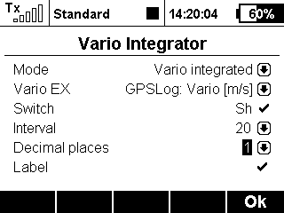

Announces the average climb rate in regular intervals.

When piloting a glider it is essential to know not only the current climb rate, but also the average over a certain duration.
The app features two basic modes:
Select a variometer or an altitude sensor as the input.
Define a switch to turn the speech output on and off. When no switch is selected the output is always active.
Set the interall (in seconds) at which the average climb rate is calculated and announced.